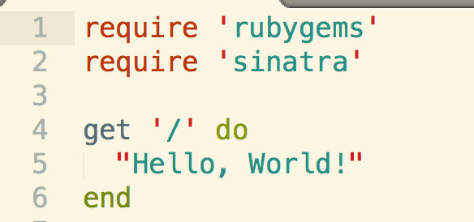
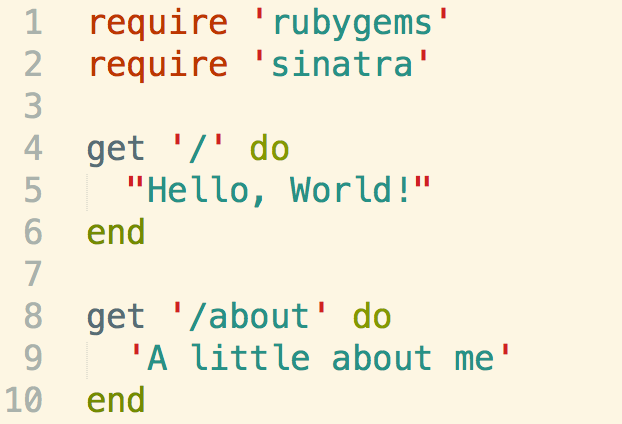
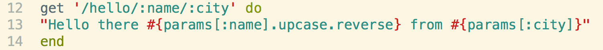
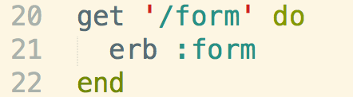
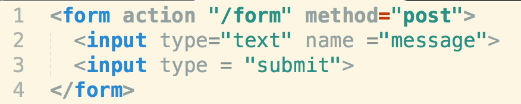
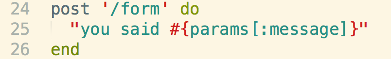
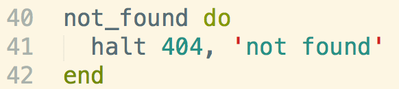

HTTP Requests
So far in Phase 1 of DBC I've been living on my computer. Nearly everything that I've created has been isolated from the web (with the exception of accessing gems.) Phase 2 will be different. Now we are starting to get our feet wet with the net.
HTTP was originally designed as a way to enable communication between users and a server, and works as a request-response protocol between said user(URL request) and server(route). Two of the most often used HTTP methods are GET and POST.User requests always come in form of a URL. Your job is setting up the server routes to direct those URL requests.
GET
The GET method requests/retrieves data from the server.
POST
The POST method submits data to be processed by the server.
So how do we use these HTTP methods as a Rubyist? One way is by using a gem called 'Sinatra'
Sinatra
As Sinatra is a gem, you should first install it and then require the gem in your source file. (Require 'rubygems' to allow gems to work as well).
GET Route
To start us off, write out this in your source ruby file.
This is a route. We are telling our server that if a user requests(via GET) the root URL ('/'), then post this message. We can also do this:
Now we are saying that if a user requests(via GET) a '/about' URL, then post this message.
URL Parameters
We can also access the URL parameters in our message.
Our message will vary according to what our users put in as their URL (via GET). We can access these varying URL parameters(:name and :city) in our message by using string interpolation #{params[:URLparameter]} and method chain them.
POST Route
Now let's do something more interesting. Write this in your file:
This is saying if a user requests(via GET) the URL '/form', load the form.erb file located in your views directory.(as requested on line 21) So you should create a views directory and a form.erb inside your views directory.
Inside your form.erb file, write this:
If you took the time to check this out with a DOM, you would see that line 1 is you setting up another conditional route so that users can send data to be processed by the server. the form action ='/hello' is a redirect page where you can view your POST request. Line 2 is setting up a text box via type='text', and naming it 'message' so that you can set a GET request to the URL you defined on line 1(form action ="/form") and use the text that you saved as 'message'. Check out the image below.
So what we did was GET a form.erb view, setup a POST request that takes a 'message' to a corresponding URL, and then created the actual POST route to display 'message'
Error messages:
Error messages are known as 404. If you request a URL for which there isn't a route, you will get an error message. To customize these messages, use the following in your basics.rb route file.
